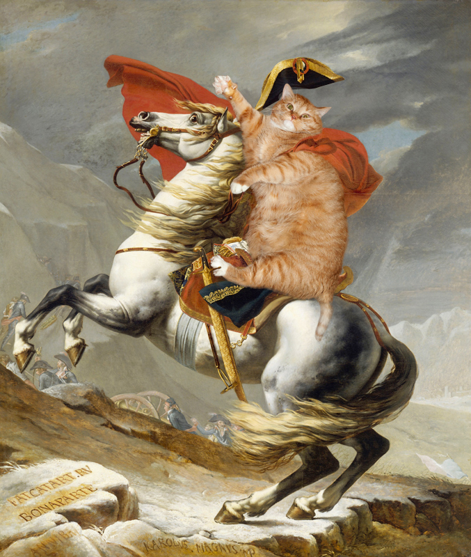
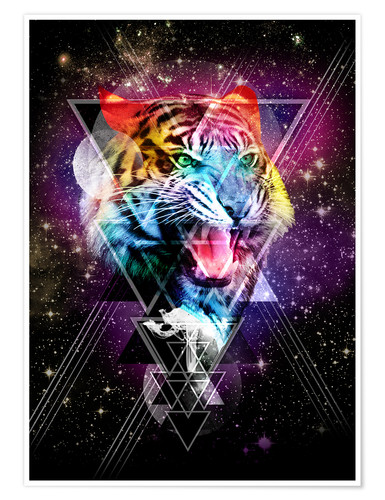

Cosmo came to being in the year 2018 after the comet P5420 passed by the planet Earth. Two human beings, Ben and Allister, were watching the comet pass by when they noticed a smoking basket at their feet. Inside was a kitten, rippling with cosmic energy. The two dusted the kitten off, fed it a saucer of space whale milk, and their journey began.
Cosmo was, from its inception, a very eclectic creature. Nothing was off limits and its curiosity knew no boundaries. Its early life was marked by a great need to explore the universe. Normally this would be a problem for a small kitten, however it possesed a natural ability to transport itself to any point in space.
Allister lived wholeheartedly for food, every moment of the day. Cosmo learned of a land full of delicious food and was determined to visit there. It got embroiled in some political conflict but ultimately ended up okay, no worse for the wear from its journey. But it did get some fun photos from the adventure.
Ben was very in-tune with themselves and always wanted one day to go on a spiritual journey. However, modern live gets in the way and there were bills to pay. Cosmo was inspired, however, and decided to go into the woods to find itself. It discovered its spirit animal: a bigger, more imposing, higher profile cat.
Cosmo's stated purpose on Earth is to ennoble the artistic endeavors of man. In that vein, Cosmo has a set hierarchy of top movements in the area of feline fine art:
Cosmo is the greatest cat in the whole universe. If you haven't met him yet, you will; he knows no boundaries (in a healthy way).
Back to my main page or my list of favorite things.